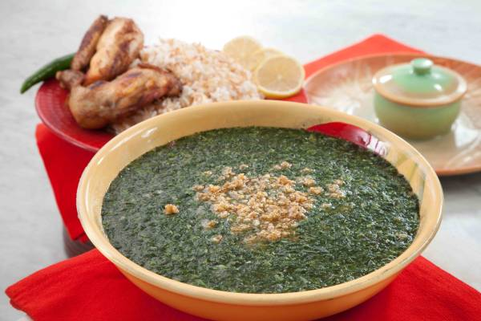

The menu :
qidra
"Al-Qidra" is a popular Palestinian dish, especially in the cities of Hebron and Gaza. It is considered a favorite meal, particularly during the holy month of Ramadan and on special occasions. Al-Qidra is an integral part of Palestinian heritage and is a traditional dish passed down through generations from ancient times
mulukhiyah
Molokhia (Corchorus olitorius) is a genus of flowering plants that includes between 40 to 100 species. The length of its stems varies, and it is cultivated primarily for its leaves, which are used to make the popular dish known as "molokhia. " The plant produces small yellow flowers that yield a number of seeds. Molokhia is a dish associated with several countries, including Egypt, Sudan, the Levant, Tunisia, Algeria, and Morocco. However, it is considered one of the ancient Egyptian dishes that gradually spread to other Arab countries and beyond.
maqluba
"Maklouba" is a popular main dish in Arab cuisine, originating from the Levant and Iraq. It consists of rice cooked with various fried vegetables, including eggplant, cauliflower, potatoes, or green beans, and it may include a combination of these vegetables. Meat, such as lamb or chicken, is often added to enhance flavor and nutritional value. Maklouba is typically served with yogurt or yogurt-based sauces, and it can also be accompanied by an Arabic salad made from tomatoes, cucumbers, parsley, lettuce, and lemon juice. While it has Palestinian origins. Maklouba is also well-known in Syria, Jordan, and Iraq, with variations in the recipe and flavors depending on the region.